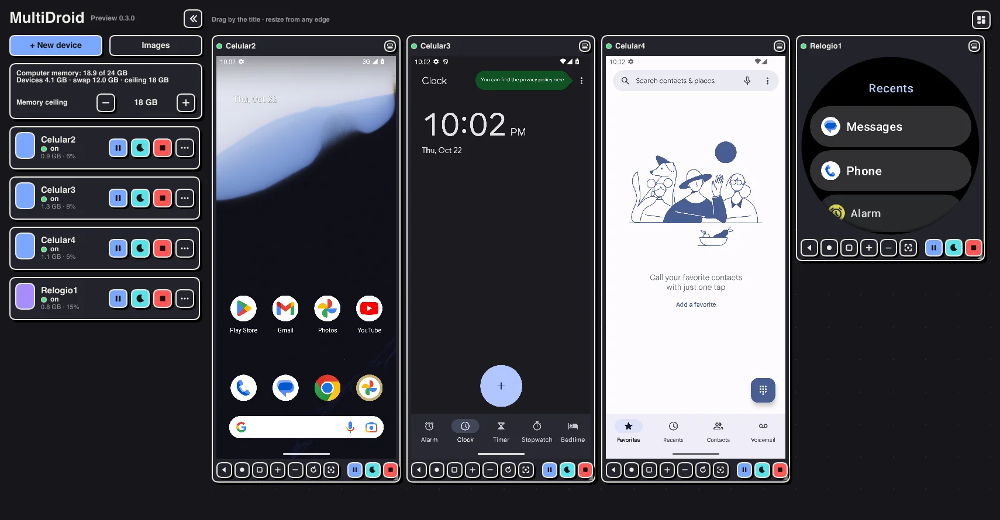
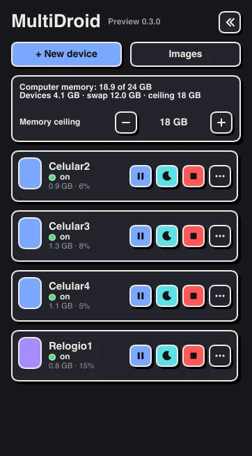

↗
Keep accounts apart.
Give separate accounts their own Android devices and switch between them without constant sign-outs.
FOR CREATORS & TEAMSRun and organize multiple Android devices in one workspace. From testing a new layout to keeping your accounts apart, your devices are right where you need them.

01 / THE POSSIBILITIES
Multiple devices should give you more room to work, not more windows to manage.
Give separate accounts their own Android devices and switch between them without constant sign-outs.
FOR CREATORS & TEAMSCompare an app across phones, tablets, foldables and watches in a single workspace.
FOR DEVELOPERS & TESTERSKeep Android devices visible alongside your desktop work instead of reaching for another phone.
FOR EVERYDAY WORKFLOWS02 / A LITTLE MORE ORDER
Arrange your workspace around the way you work, with controls close to every screen.
Arrange your deskPlace and resize devices or arrange them automatically.
Keep an eye on resourcesSee each device’s status, memory and CPU in the panel.
Control each deviceUse navigation, volume, rotation, screenshots and power controls.
Features shown describe the Mac experience. Preview functionality can differ.

03 / FIND YOUR VERSION
Start with the stable Mac release or help shape the early desktop previews.
0.2 · Apple Silicon
macOS 26 or later
0.3.0-alpha.3 · x86-64
Windows 10 / 11
0.3.0-alpha.3 · x86-64
Debian / Ubuntu
Windows and Linux builds are early previews and may be incomplete. macOS supports Apple Silicon; Windows and Linux support x86-64. The Mac preview is also available in the release notes. Windows may show a SmartScreen warning. Explore all releases ↗
Desktop preview. Features may differ from the native Mac release.
BEFORE YOU BEGIN
Android system images are downloaded separately and have their own licenses. Some apps, including banking apps, may not work in an emulator. MultiDroid does not automate accounts or bypass integrity checks.